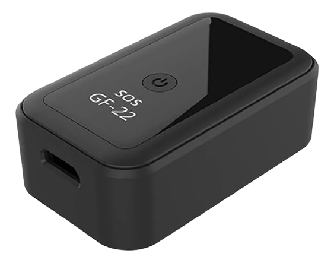
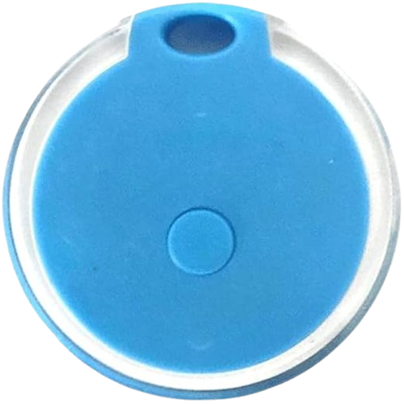
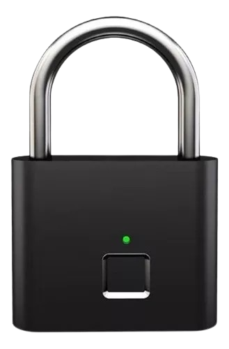

O tracker é um dispositivo que quando instalado, coleta os dados de localização e enviá-los para um aplicativo no seu celular. Ele enviará as mensagens por meio de um chip inserido nele que emitirá um sinal para as antenas das operadoras de determinado chip e esse sinal será mostrado na tela do celular.

O sensor a distância consiste em uma forma de ter uma noção de proximidade da mochila, para quando estiver longe do alcance, o dispositivo acione um alarme que enviará sua posição para os contatos pré-cadastrados no dispositivo. Esse alarme está conectado ao bluetooth do celular e quando a mochila sair do alcance de 17 metros, o dispositivo e o celular vão emitir um efeito sonoro alertando que seu dispositivo está fora de alcance.

Esses cadeados serão implementados para uma segurança maior para a mochila que poderá ser tanto um cadeado com senha ou um cadeado por meio de sensores com digital para aumentar ainda mais a segurança dos seus pertences.

O sensor de proximidade serve para emitir um efeito sonoro ao detectar a presença de algo, geralmente por meio da emissão de ondas sonoras infravermelhas.